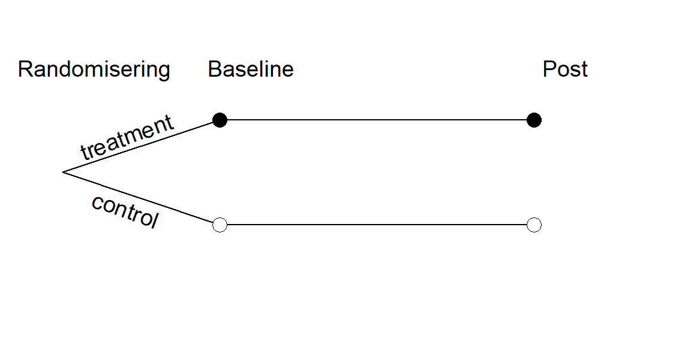
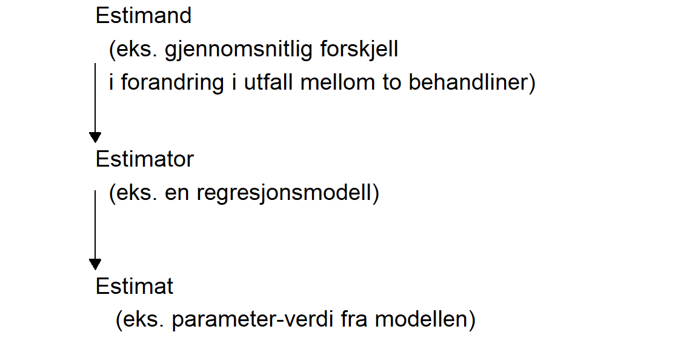

16 Workshop: Sammenligne gjennomsnitt
Når vi gjennomfører en studie så samler vi observasjoner til et datasett. Denne ene datainnsamlingen gir oss mulighet å lage et estimat av noe som vi mener representerer noen aspekt av verden. For eksempel, vi kan være interesserte i hvordan en behandling påvirker muskelfunksjon hos en gruppe mennesker. Vi konstruerer studien sånn att behandlingen gis til en del av utvalget i studien mens den andre delen av utvalget får en lignende, men hypotetisk ikke like effektiv behandling (kontrollgruppe). De to gruppene sammenlignes og den gjennomsnittlige effekten av behandlingen når vi subtraherer forandringer i kontrollgruppen er estimatet av effekten av behandling på muskelfunksjon.
Dessverre finner vi at det finnes flere måter å lage dette estimatet på, det er heller ikke sikkert at vi er enige om hva det er vi ønsker å estimere for å på best måte fange fenomenet vi ønsker å undersøke. Vi kan skille på tre begreper (se Figur 16.1), et estimat er den kvantitet som vi ønsker å få fra vår statistiske analyse. En estimator er måten vi beregner denne kvantiteten på og en estimand er det vi ønsker å estimere.
Én enkelt studie er ofte ikke nok for å gi oss grunnlag til for eksempel å si at en gitt behandling er bedre enn kontroll. For å lage enda bedre grunnlag kan man kombinere flere studier i en analyse, en metaanalyse. Vi kan se på en metaanalyse som et forsøk på å gi et samlet bilde, samlet over flere forskjellige måter å gjennomføre studier på. For eksempel kan forskjellige forskergrupper samle inn data på forskjellige måter, noe som påvirker resultatene i de enkelte studiene. I denne workshop skal vi først gjennomføre analyse av enkelte studier ved bruk av forskjellige «estimatoer». Deretter skal vi kombinere estimater fra de forskjellige studiene i en metaanalyse. I den første delen av workshopen vil vi i tillegg til standardmoduler i Jamovi bruke modulen GAMLj. I del to av workshopen bruker vi også modulen MAJOR.

16.1 Studiedesignet og oppgave
Studiene som blir analysert i denne workshopen er randomiserte kontrollerte studier. Deltakerne i studiene blir randomisert til en behandlingsgruppe (“treatment”) eller en kontrollgruppe (“control”). De to gruppene blir målt i forkant av en intervensjonsperiode (baseline) og etter intervensjonsperioden (post).
Gruppeoppgave
Velg en måte å analysere dataene på ved hjelp av Jamovi. Formulere hva dere ønsker å studere (estimand), hvordan dere ønsker å estimere (estimator) og hva som vil representere estimatet fra analysen.
Rapporter gjennomsnitt og standardavvik for utfalls variabel per gruppe og tidspunkt.
16.1.1 Datasett
Datasettene finner dere her
16.2 Metaanalyse
Gruppeoppgave
- Sammenstill data fra de andre studiene i en ny Jamovi-fil
- Gjennomfør en metaanalyse av resultatene (bruk Effect sizes eller Mean differences).